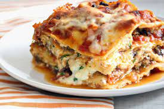

Lasagna

Cheesy Lasagna Dish to Enjoy!
This desired lasagna recipe will have you
wanting more with every bite. Some have
even called it the world's best lasagna
Read ahead to learn how you can make
the best lasagna in the comfort of
your own home!
Ingredients
- Meat: Sweet Italian
sausage and lean ground beef
- Onion and Garlic: An onion
and two cloves of garlic are
cooked with the meat
to add tons of flavor
- Tomato Products: You'll
need a can of crushed tomatoes, two cans of
tomato sauce, and two
cans of tomato paste
- Sugar: Two
tablespoons of white sugar add
subtle sweetness and enhance
the flavor of the sauce
- Spices and Seasonings: This
lasagna recipe is flavored with
fresh parsley, dried basil leaves,
salt, Italian seasoning,
fennel seeds, and black pepper
- Lasagna Noodles: Use store-bought
or homemade lasagna noodles
- Cheeses: Parmesan, mozzarella, and
ricotta cheese make
this lasagna extra decadent
- Egg: An egg helps bind the
ricotta so it doesn't ooze out of
the lasagna when you cut into it
Steps
How to Make Lasagna Step-By-Step
Here's a very brief overview of what you
can expect when you make homemade lasagna:
- Make the meat sauce
- Cook the noodles
- Make the ricotta mixture
- Layer the lasagna according to the recipe instructions
- Cover with foil and bake
- Let the lasagna rest before serving
How to Layer Lasagna
The detailed layering instructions can be
found in the recipe below, but this is the
order you'll follow:
- Meat Sauce
- Noodles
- Ricotta Mixture
- Mozzarella Slices
- Meat Sauce
- Parmesan Cheese
- Repeat the layers, then top with remaining Parmesan
How to Cook Lasagna
- Preheat oven to 375 degrees F
- Cook for 25 minutes covered, then 25 minutes uncovered
- Let the lasagna rest at room temperature for at least 15 minutes before serving
ENJOY!
 Return to Homepage
Return to Homepage